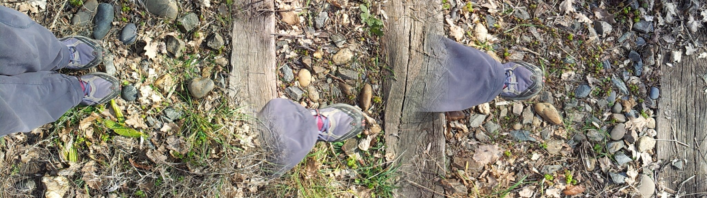

Newsletter Portfolio
25/04/2025
Découvrez mes derniers projets et réalisations dans cette newsletter hebdomadaire.
Récits visuels, horizons numériques :
Chaque newsletter, un voyage entre données, créativité et découvertes
.jpg)
Comment lire... la citrouille de Cendrillon

Prototype CRM Relations Entreprises

Match'Emploi

Mini-buzz avec Cluely

Journal d'Apprentissage - Recherche d'Emploi

Les animaux n'ont pas besoin de chef
Comment lire... la citrouille de Cendrillon
L'identité du lecteur
Le petit buzz autour de Cluely (voir post "Cluely : de ton entretien d'embauche à ton rancard!") renvoie à des problématiques identitaires marquées et très actuelles, à travers la promotion d'un produit IA censé "tricher sur tout" ! Et bien que cette vidéo reste dans un modèle "mâle, (blanc), de culture standard", ce télescopage entre marketing & litterature se tente.
Dans la critique littéraire contemporaine, la lecture impersonnelle fondée sur des critères esthétiques objectifs est rejetée au profit d'une approche qui valorise l'identité du lecteur. Cette lecture de William Marx du travail d'Elaine Castillo ("How to read now", 2022) met en perspective toute cette complexité identitaire américaine, mais aussi les projections associées à toutes formes de domination.
Cela faisait alors écho à un échange avec une de mes élèves de 3eme qui lisait un passage des Misérables et transposait sur le même plan injustice sociale et colonisation en Nouvelle-Calédonie : pour elle, la farine sur le visage du boulanger était le symbole de la domination.
Son explication était comme la citrouille d'Elaine Castillo, parfaitement cohérente avec sa réalité, et ne toujours pas tenir compte de ses réalités est très justement ce que reproche cette auteur ; même si son point de vue m'apparaît excessif, il reste très drôle (j'aurai aimé ajouté pertinent mais je ne l'ai pas encore lue)
Heureusement, l'écriture permet cette liberté et reste un moteur de changements. Je vous en laisse juge.
La citrouille de Cendrillon
Cours au Collège de France du 18 mars 2025 : La citrouille de Cendrillon
Professeur : William Marx Chaire Littératures comparées
Dans le régime de lecture contemporain d’inspiration progressiste et décoloniale, jamais le lecteur ne saurait oublier qui il est et d’où il lit. On assiste à la fin de l’idée d’une lecture impersonnelle des œuvres, qui dominait la critique littéraire formaliste, à savoir une lecture fondée sur des critères esthétiques objectivables, sur des paramètres formels universalisables, généralisables à toutes les cultures. La dépersonnalisation du lecteur est désormais considérée comme l’ultime subterfuge du « suprémacisme blanc » (Castillo) pour asseoir sa domination et maintenir dans la soumission les populations racisées. Pour la critique décoloniale, en effet, le lecteur idéal prévu par les grands textes canoniques européens, le « lector in fabula » (Eco), est un lecteur blanc, mâle, hétérosexuel, de culture standard.
Retour en hautPrototype CRM Relations Entreprises
Présentation
Une application de démonstration pour la gestion de la relation client (CRM), spécialement conçue pour le suivi des partenariats avec les entreprises, offrant une interface intuitive et des fonctionnalités complètes d'analyse et de reporting.
Fonctionnalités Principales
- Gestion centralisée des entreprises partenaires et prospects
- Suivi détaillé des interactions et communications
- Planification et gestion d'événements professionnels
- Publication et suivi des offres d'emploi, stages et alternances
- Tableaux de bord analytiques et rapports personnalisables
Technologies Utilisées
- Python (Streamlit)
- Pandas pour la manipulation des données
- Plotly et Matplotlib pour les visualisations
- Stockage de données CSV (extensible à des bases de données)
- Interface responsive avec CSS personnalisé
Lien du Projet
Explorer Démo CRM Relations Entreprises
Retour en hautMatch'Emploi
Présentation
Il s'agit d'un prototype (!!) de mise en relation entre candidats et offres d'emploi, développée avec une interface intuitive et des algorithmes de matching.
Fonctionnalités Principales
- Algorithme de matching basé sur les compétences et préférences
- Gestion complète des profils jeunes et des offres d'emploi
- Suivi des mises en relation et des candidatures
- Tableaux de bord statistiques et analytiques
- Système de filtres multicritères avancés
Technologies Utilisées
- Python (Streamlit)
- Pandas pour la gestion des données
- Plotly et Matplotlib pour les visualisations
- Algorithmes de calcul de similarité (cosinus)
- CSS personnalisé pour l'interface utilisateur
Lien du Projet
Explorer l'Application Match'Emploi
Retour en hautMini-buzz avec Cluely
Cluely : de ton entretien d'embauche à ton rancard !
La vidéo présente ce jeune entrepreneur, Roy Lee, qui fait le buzz actuellement pour avoir triché sur des entretiens d'embauche, et qui se met ici en scène, se faisant mousser auprès de son date du moment grâce à son outil Cluely : un outil IA pour “cheat on everything.” ["tricher sur tout" - leur slogan (?!)]
L'histoire fait sourire... alala ces Américains (ou les hommes en général), l'autodérison dont fait preuve la nouvelle génération est plus qu'appréciable, bien que sous la blague le pavé : son bluff interpelle car son outil IA reste basé sur de l'apprentissage automatique, rien de révolutionnaire, mais le principe assumé de tricher pour réussir pose question ou devrait poser question.
Notre propos n'est pas de philosopher sur le caractère ethique de la tricherie, tout le monde triche dans la vie.
La vraie vie, c'est d'ailleurs ce que démontre magistralement Roy Lee dans sa vidéo de teasing avec son rancard : l'IA est finalement parfaitement intégrable à la vie normale (jolie projection pour sa promotion de produit!)
...Ces tours de hold-up mental sont fascinants.
Mais c'est en tombant sur l'historique de l'association AURORE qui aide les personnes les plus fragiles, et privées de vie normale, que la démarche m'a semblé plus difficile, dans les deux cas.
Fondée en 1872 à Paris et reconnue d'utilité publique en 1875, les statuts de cette association sont ainsi définis :
« La société a pour but de ramener aux habitudes d’une vie honnête et laborieuse...lui paraissent susceptibles de revenir au bien » ref
Là où je veux en venir... bien que cabossée, notre conscience sociétale (notre pacte social) se fonde aussi sur ces principes d'honnêteté et de labeur, depuis au moins le 19ème siècle.
Même si je me base d'un point de vue "vieux continent", les Etats-Unis partage aussi ces mêmes principes.
Alors prolongeons cette lecture vers la période trouble que traverse actuellement ce pays dans sa recherche identitaire : dans un système plombé par un racisme dit systémique, finalement pourquoi être honnête et dans l'effort? Dans ce cas, on doit aussi en déduire que, dans sa logique, la fin justifie les moyens.
...C'est un pari à 5.3 millions de dollars et cet étudiant vient de Columbia. Et on comprend aussi pourquoi il a été suspendu par son université.
Les forces idéologiques que font émerger les outils IA sont conséquents, ces crises identitaires ne sont pas propres aux Etats-Unis, nos repères peuvent sembler modifiés, on aurait tort de les voir uniquement comme de simples produits en plus dans notre panoplie.
Roy Lee compare d'ailleurs son outil à la calculatrice ou au correcteur orthographique (c'est déjà moins glamour!) mais il a raison sur ce point : nous déléguons ces tâches cognitives à des machines et plus personne aujourd'hui n'y voit à redire (...dans une vie normale)
Conclusion : l'outil IA n'est vraiment pas un problème dans nos vies.
Retour en hautJournal d'Apprentissage - Recherche d'Emploi
Présentation
Une demo pour du suivi personnalisé dans l'accompagnement des chercheurs d'emploi dans leur parcours d'apprentissage et de développement professionnel, offrant un espace structuré pour documenter leur progression et optimiser leur démarche.
Fonctionnalités Principales
- Journal d'apprentissage réflexif et structuré
- Suivi détaillé des candidatures et entretiens
- Évaluation et progression des compétences clés
- Gestion d'objectifs et plans d'action personnalisés
- Profil professionnel complet et évolutif
- Accès à des ressources et conseils ciblés
Technologies Utilisées
- Python (Streamlit)
- Pandas pour l'analyse de données
- Plotly pour les visualisations interactives
- Stockage JSON pour les données utilisateur
- Interface responsive avec CSS personnalisé
Lien du Projet
Explorer l'Application Journal d'Apprentissage
Retour en hautLes animaux n'ont pas besoin de chef
Concept d'auto-organisation
"Seulement 5% de nos décisions sont des choix"
Dans l'idée d'une décision, on associe souvent une notion d'intention et de choix.
Le primatologue Cédric Sueur fait parti de ceux qui remettent en question cela à travers des notions d'intelligence collective et d'auto-organisation dans une perspective de recherches actuelles, c'est à dire l'autonomie des systèmes.
On y retrouve des notions d'efficacité et d'optimisation avec notamment des principes de sommes de règles simples.
Dans un contexte IA, l'auto-organisation est un concept important dans l'apprentissage des réseaux de neurones.
Cette vidéo est une bonne introduction indirecte au sujet.
Retour en haut